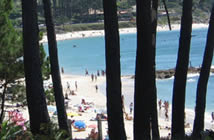

|
 |
 |
 |
| CASA RURAL |  |
LOCALIZACIÓN | |
CONTACTAR | MONASTERIO | GOLF | |
RUTAS | |
PLAYAS | |
FIESTAS | |
|
|
|
RUTAS: CONCELLO DE MEIS  El municipio de Meis se encuentra situado en una de las
zonas interiores del Valle del Salnés. Como referencia
geográfica más sobresaliente está el Monte Castrove, el cual
corona el valle con un mirador que ofrece unas vistas
incomparables: las rías de Pontevedra, con la Península del
Morrazo, Islas Cíes y Ons y la Ría de Arosa, con la Isla de
Arosa, la Península de El Grove y La Toja así como todo el
valle del Salnés. El municipio de Meis se encuentra situado en una de las
zonas interiores del Valle del Salnés. Como referencia
geográfica más sobresaliente está el Monte Castrove, el cual
corona el valle con un mirador que ofrece unas vistas
incomparables: las rías de Pontevedra, con la Península del
Morrazo, Islas Cíes y Ons y la Ría de Arosa, con la Isla de
Arosa, la Península de El Grove y La Toja así como todo el
valle del Salnés. En este monte existen dos vestigios de la antigüedad: de la etapa Neolítica, los dólmenes como el de Casiña da Moura; mientras que de la Edad de Bronce existe un verdadero tesoro de arte rupestre en Outeiro do Cribo (Castrove), representado por petroglifos que datan del año 1000 a.c. y que representan laberintos, ciervos, círculos, hombres a caballo y los más variados tipos de juegos geométricos. El hecho de que muchos de estos enclaves sean desconocidos o estén sin estudiar invita a los más inquietos a visitar y descubrir orígenes y significados. El siguiente paso lo constituye el Monasterio de Santa María de Armenteira (S.XII), joya del románico y gloria durante siglos de los monjes del Cister. Santa María de Armenteira fue fundado en 1167 por el monje Ero, según cuenta la leyenda, el cual permaneció doscientos años escuchando el canto de un ruiseñor. Será esta leyenda precisamente a la que dedique el Rey Alfonso X el Sabio su cántiga 103. A pesar de lo que se pudiera pensar Meis no está a la sombra del Monasterio de Armenteira al contrario, éste nos sirve de guía para descubrir las diferentes <iglesias> que pueblan las demás parroquias del municipio. Obligado es comenzar la visita por San Benito en Mosteiro, sede capitalina del municipio, y que originariamente constituyó el antiguo monasterio benedictino fundado en ésta comunidad en el siglo XI. En la parroquia de San Martiño encontramos las iglesias de San Martiño y San Salvador de Meis, ambas del siglo XII; en Paradela destaca la iglesia de Santa María, en la que no pasa desapercibido su ábside románico, y ya en la parroquia de Santo Tomé sobresalen de forme singular las pinturas que pueblan el interior de la iglesia. Finalmente hay que citar las iglesias de San Lorenzo y San Vicente, cuyos interiores destacan por el preciosismo de sus retablos en piedra.  La arquitectura civil tiene en Meis una importancia de
primera línea. La riqueza natural y la abundancia de
materiales constructivos culmina en la edificación de Pazos
como Quintáns, Pompeán, Casal do Río La Moroza o Señoráns.
Quien guste de magníficas casas, preciosos jardines, bosques
centenarios, íntimas iglesias,..., no puede menos que
visitar estos Pazos, que son testigos de la evolución social
del Salnés. La arquitectura civil tiene en Meis una importancia de
primera línea. La riqueza natural y la abundancia de
materiales constructivos culmina en la edificación de Pazos
como Quintáns, Pompeán, Casal do Río La Moroza o Señoráns.
Quien guste de magníficas casas, preciosos jardines, bosques
centenarios, íntimas iglesias,..., no puede menos que
visitar estos Pazos, que son testigos de la evolución social
del Salnés. La arquitectura popular también está presente. Algo tan pragmático como un molino fluvial, necesario en la primitiva economía agrícola se nos presenta en la actualidad como una curiosa construcción que atrae de especial forma la atención del turista. Muy conocidos son los molinos de Arcos en Santo Tomé, pero existen igualmente en Meis ejemplos muy valiosos en todas sus parroquias. |
|
LA RUTA DEL MARISCO GALLEGO  En estas tierras de mar y abundancia de pescados destacan
sobre manera los mariscos, reclamo para propios y extraños y
parte principal de cualquiera de las muchas delicias
gastronómicas que ofrecen los centros de restauración de
estos lares.
Punto neurálgico de estos festejos es la localidad de O
Grove que durante más de tres décadas lleva celebrando con
inusitado éxito la fiesta del Marisco. En este famoso puerto
de mar destaca la geografía de sus calles, la curiosa
estatua dedicada a los pescadores y sobre todo la visita a
la famosa Isla de la Toja reconocida por sus beneficiosas
aguas termales. Mítica también es su enorme playa de A
Lanzada. Otros elementos de interés de esta localidad los
podemos situar en el antiguo castro fortificado de A
Siradella, el estupendo mirador de Pedra Cabaleira, la
necrópolis de Adro Vello y la playa de O Carreiro. En estas tierras de mar y abundancia de pescados destacan
sobre manera los mariscos, reclamo para propios y extraños y
parte principal de cualquiera de las muchas delicias
gastronómicas que ofrecen los centros de restauración de
estos lares.
Punto neurálgico de estos festejos es la localidad de O
Grove que durante más de tres décadas lleva celebrando con
inusitado éxito la fiesta del Marisco. En este famoso puerto
de mar destaca la geografía de sus calles, la curiosa
estatua dedicada a los pescadores y sobre todo la visita a
la famosa Isla de la Toja reconocida por sus beneficiosas
aguas termales. Mítica también es su enorme playa de A
Lanzada. Otros elementos de interés de esta localidad los
podemos situar en el antiguo castro fortificado de A
Siradella, el estupendo mirador de Pedra Cabaleira, la
necrópolis de Adro Vello y la playa de O Carreiro.Desde O Grove tomaremos la carretera que nos conducirá a las muy frecuentadas playas veraniegas de las localidades de Portonovo y Sanxenxo. En el amplio ayuntamiento de Sanxenxo, amén de los típicos hórreos y cruceiros destaca un buen conjunto de edificios religiosos, quizá los más importante sean la ermita de Nuestra Señora de la Lanzada con orígenes en el siglo X y la iglesia de San Estebán de Noalla en origen románica. Otros no menos destacados: la iglesia de San Juan de Dorrón, con un bonito retablo barroco, la antiquísima iglesia parroquial de Adina, la capilla do Santo, la parroquia de Bordóns. Desde este punto nos dirigiremos a la localidad de Combarro. En Combarro, localidad de raíces agrícolas y marineras, destacan sus cruceiros, señalamientos de los caminos o recuerdos de penitentes, su típica fotografía de casas de piedra granítica adornadas de balconadas y el paseo por su calle principal. Otro elemento de la singularidad gallega que aparece en esta localidad por doquier son sus estupendos hórreos, típicos graneros utilizados para madurar, secar y guardar el maíz. En algunos lugares se llaman cabazos o cabaceiros y tienen como elementos decorativos en los vértices del techo una cruz y el cono o pirámide que simboliza la fertilidad. En las cercanías no podemos dejar de ver el Monasterio de Poio con su magnífico claustro de las Procesiones. Desde Combarro enfilaremos carretera hasta Vilagarcía de Arousa. Esta localidad medieval es un muy transitado lugar de veraneo, entre sus monumentos principales destacar el convento de Vista Alegre y pazo de los García de Caamaño, con sus torres almenadas y chimeneas, la iglesia de Santa Baia de Arealonga. De entre los Edificios civiles de interés destacaremos el pazo de Golpelleira. A un escaso kilómetro de Vilagarcía se encuentra la localidad de Carril con su hermoso paseo y la cercana isla de Cortegada un idílico bosque de laurisilvas en el que quizás podemos reposar nuestras andanzas y degustar las afamadas almejas del vecino pueblo. A la vuelta podemos parar en Vilanova de Arousa y conocer el pazo de Cuadrante, casa natal del escritor Valle Inclán, y la Torre del Monasterio de Cálogo. Desde ahí, llegaremos en unos 10 kilómetros a Cambados. Cambados ostenta el título de "Muy Noble Villa". Esa nobleza se aprecia en las centenarias piedras que componen sus hermosas plazas y pazos. Asimismo, es el enclave más conocido para la degustación del vino más reconocido de estas tierras: el albariño. El primer domingo de agosto esta consagrado a este vino y la localidad se viste de fiesta. De su ajetreada historia nos podían dar cuenta las sucesivas oleadas de invasores celtas y vikingos de las que se hizo recuerdo y leyenda y la defensa que desde hace más de diez siglos ha ofrecido la torre de San Saturnino en el barrio marinero de Santo Tomé. Pero sobre todo esta rica localidad destaca por haber reunido en su geografía exquisitos ejemplos de la más conocida arquitectura popular de Galicia: el pazo. Así nos encontramos con el más importante de Fefiñans del S.XVI, con su torre y bodega, en la bellísima plaza del mismo nombre y otros no menos interesantes como el de Bazán, hoy Parador de Turismo, los de Ulloa, Torrado, Montesacro y Salgado. De la arquitectura religiosa importan la iglesia de San Benito y la iglesia de Santa Mariña. Un edificio civil de interés, que no podemos dejar de ver, es el molino de Seca, por la estructura ingeniosa con la que aprovecha la fuerza de las mareas. RUTA DEL VINO  Esta
ruta constituye la mejor opción para los visitantes que
deseen profundizar en la cultura del vino, y más
concretamente, en la del albariño. Ésta es una de las
ofertas culturales más desarrolladas en O Salnés, la subzona
de la Denominación de Origen Rías Baixas, que aglutina la
mayor superficie de cultivo, producción y número de bodegas,
y que es, además, la cuna del propio albariño. Esta
ruta constituye la mejor opción para los visitantes que
deseen profundizar en la cultura del vino, y más
concretamente, en la del albariño. Ésta es una de las
ofertas culturales más desarrolladas en O Salnés, la subzona
de la Denominación de Origen Rías Baixas, que aglutina la
mayor superficie de cultivo, producción y número de bodegas,
y que es, además, la cuna del propio albariño. La ruta del vino Rías Baixas, pionera en España por su organización y señalización, permite al turista visitar varias bodegas de la comarca de muy diverso carácter: familiares, cooperativas de gran tamaño, urbanas, históricas, artesanales... En todas ellas podrá degustar el vino, también sus aguardientes, y conocer directamente por boca de los productores cómo se transforma la dorada y delicada uva albariña en un caldo delicioso, que alegra el paladar y el corazón. El trabajo de los viticultores de O Salnés (entre ellos, los de Vilagarcía) ha puesto al vino albariño a la cabeza de los blancos del mundo, haciéndolo merecedor de innumerables galardones en las ferias y concursos del vino más prestigiosos. Esta realidad puede conocerse por medio de una ruta en la que se integran una treintena de <bodegas> de todos los municipios de la subzona de O Salnés. RUTA DE LOS PAZOS El ayuntamiento de Vilagarcía ha diseñado una ruta que permite conocer algunos de los pazos más importantes de la comarca, pertenecientes a los municipios de Vilagarcía, Ribadumia y Cambados. La ruta se realiza un día a la semana, en un autocar que parte a las 10 de la mañana de la Oficina de Turismo de O Cavadelo, donde se pueden adquirir los billetes. Los precios son muy asequibles. El recorrido incluye visitas a los pazos de Vista Alegre, Rubiáns, O Casal (Lois-Ribadumia), Adega Martín Códax (Cambados), Monte Sacro (Cambados) y O Rial. Más información en la oficina municipal de turismo de Vilagarcía - Parque do Cavadelo. Teléfono: 647 783 468 / Fax: 986 501 109. Email: tmo@ivilagarcia.com Horario de invierno: De lunes a domingo de 10:00 a 14:00 y de 16:30 a 19:30 horas. Horario de verano: De lunes a domingo de 10:00 a 14:00 y de 17:00 a 20:00 horas. Fuentes:
|
| Casa rural | Localización | Contactar | Monasterio | Club de golf | Rutas | Playas | Fiestas |